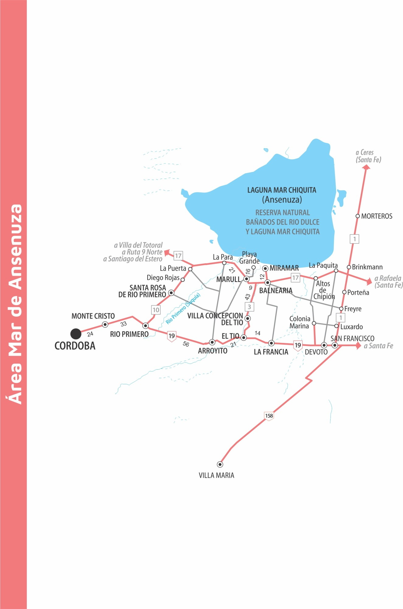
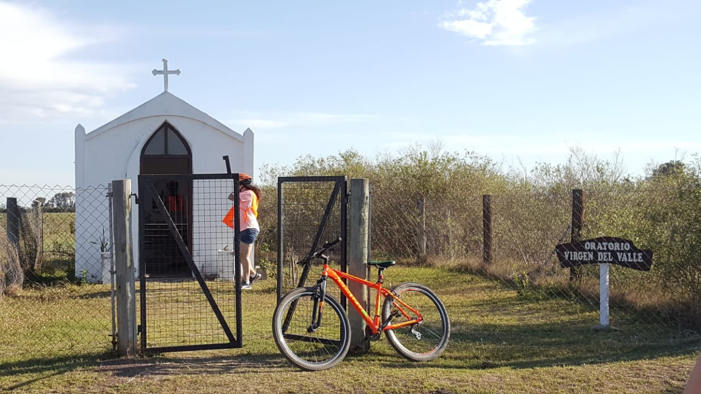
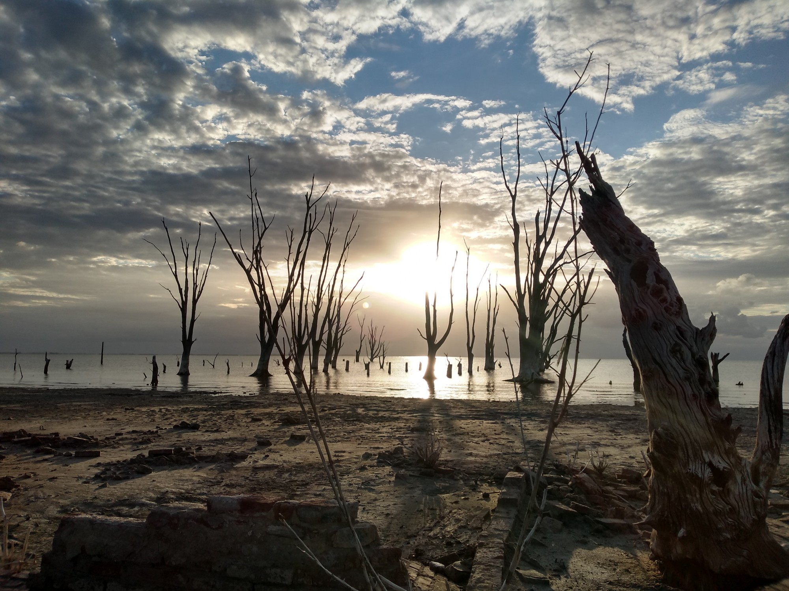

Ansenuza
 La zona alberga numerosas localidades, muchas de ellas son comunas y parajes rurales. Sin duda, el atractivo turístico más importante es la Reserva de Uso Múltiple “Bañados del Río Dulce y Laguna Mar Chiquita”, cuya laguna recibe los afluentes del Río Suquía, el Río Xanáes y el Río Petri, y constituye uno de los humedales salinos más grandes de Latinoamérica y el quinto del mundo. El ecosistema, que se distingue por la presencia de una variada y abundante flora y fauna autóctona con más de 350 especies de aves, ha sido declarado sitio RAMSAR, dentro de una categoría internacional de sitios de conservación de especies de aves acuáticas.
La zona alberga numerosas localidades, muchas de ellas son comunas y parajes rurales. Sin duda, el atractivo turístico más importante es la Reserva de Uso Múltiple “Bañados del Río Dulce y Laguna Mar Chiquita”, cuya laguna recibe los afluentes del Río Suquía, el Río Xanáes y el Río Petri, y constituye uno de los humedales salinos más grandes de Latinoamérica y el quinto del mundo. El ecosistema, que se distingue por la presencia de una variada y abundante flora y fauna autóctona con más de 350 especies de aves, ha sido declarado sitio RAMSAR, dentro de una categoría internacional de sitios de conservación de especies de aves acuáticas.
Como consecuencia de las gestiones encabezadas por el gobierno de la provincia de Córdoba, a través de la Agencia Córdoba Turismo, la Cámara de Senadores aprobó la creación del Parque y Reserva Nacional Ansenuza, en la Laguna de Mar Chiquita. La nueva Área Natural Protegida comprende más de 600 mil hectáreas, siendo el parque nacional más grande del país.
Este ambiente posibilita la realización de actividades de ecoturismo, principalmente avistaje y fotografía de aves. Por aquí, se pueden observar flamencos, gaviotas, patos, aves playeras migratorias y otras especies de ambientes acuáticos. A estas propuestas se suman alternativas como la pesca de pejerrey, deportes náuticos, excursiones guiadas, safaris fotográficos, paseos nocturnos y actividades vinculadas al turismo salud, aprovechando las propiedades minerales del agua, como fangoterapia y masajes relajantes.
Descarga el mapa de la zona aqui

Pedaleando por el Miramar
Si se busca una manera entretenida y completa para conocer Miramar, no puede faltar entre las opciones un paseo en bicicleta. Es así que, sobre dos ruedas se recorren los puntos más importantes y otros algo olvidados de la localidad. Desde una mirada turística sustentable, la clave será sumarse al paseo en bici junto con Pedaleando. ¿De qué se trata? Este emprendimiento familiar busca revalorizar diversos sitios miramarenses a través de circuitos interpretativos acompañados de un guía idóneo.

Entre diversos atractivos
A medida que se van relatando hechos históricos, se visita la zona urbana, conociendo diversos sitios emblemáticos. Entre ellos, se encuentra el ex hotel Copacabana (cuya torre sigue en pie luego de una inundación) y la capilla San Antonio. Reconocida por ser la primera capilla croata de la provincia y refugio de niños huérfanos de la Segunda Guerra Mundial, es otro punto turístico que se suma al plan.

Otros lugares únicos que se agregan al trayecto son la ex Escuela Nacional y el oratorio Virgen del Valle. No pueden faltar, tampoco: el museo Hotel Viena; el puente barbero y las cinco esquinas. A su vez, un imprescindible es Colonia Müller, testigo de una época de esplendor, donde hoy solo sobrevive la torre del tanque de agua.
Vale aclarar que hay varios circuitos y se incluyen cascos y bicicletas. Se recorren entre tres y siete kilómetros.
Fiestas Rurales: Un viaje en el tiempo de Balnearia
La Laguna Mar Chiquita es uno de los humedales salinos más extensos e interesantes de Sudamérica y del mundo.
Durante los meses de invierno, las colonias inmigrantes cercanas a Balnearia ofrecen grandes fiestas en sus clubes o centros educativos rurales. Los organizadores preparan su especialidad gastronómica típica, en un intento por perpetuar la tradición, y luego se degusta un rico asado argentino. Estos eventos surgieron por iniciativa de grupos de extranjeros que echaron raíces en estos pequeños poblados.
El paraje de Madre Selva organiza canelones en junio; el 27 de julio es el turno de la raviolada en “El Desquite”; en agosto, le toca a los sorrentinos de Frontera Norte y Loma de Los Indios; así como durante el año también lo harán San Lorenzo, Frontera Sur y La Severina.
Estas siete colonias se encuentran representadas en la bandera de Balnearia, bajo el símbolo de siete estrellas, demostrando así la importancia de estos lugares para el crecimiento de la región.
Convocante
Con motivo de asistir a estos eventos, mucha gente de los alrededores, así como aquellos que emigraron a pueblos más grandes, vuelven campo adentro a reencontrarse con sus raíces. Tan populares son, que las tarjetas suelen acabarse 15 días antes de la fecha fijada.
Este compromiso, tan característico de los habitantes de las zonas rurales, enaltece el sentido de pertenencia de esta gente con su lugar de origen.
Asistir a una fiesta rural es hacer un viaje en el tiempo: los caminos de tierra, la comida familiar acompañada de una buena bebida, los niños corriendo entre los adultos que bailan al compás de una orquesta en vivo. Todos unidos como una gran familia, reflejando el legado de los inmigrantes.
Mar de Ansenuza
Se encuentra ubicada en el noreste de la Provincia y con una extensión de 6 mil km2, resulta un verdadero Mar interior en medio de la llanura Cordobesa.
Esta área desarrolló un complejo ecosistema, compuesto por abundante flora y fauna autóctona. Estas características han convertido a la Mar Chiquita en el destino por excelencia para la práctica de avistaje de aves.
En la Laguna desembocan tres ríos: el Río Primero o Suquía, el Segundo o Xanaes y el Río Dulce.
Ocupa una parte del extremo noreste de la provincia de Córdoba, con costas sobre cuatro departamentos: Río Seco y Tulumba, al este, el departamento Río Primero al norte y el centro del departamento San Justo.